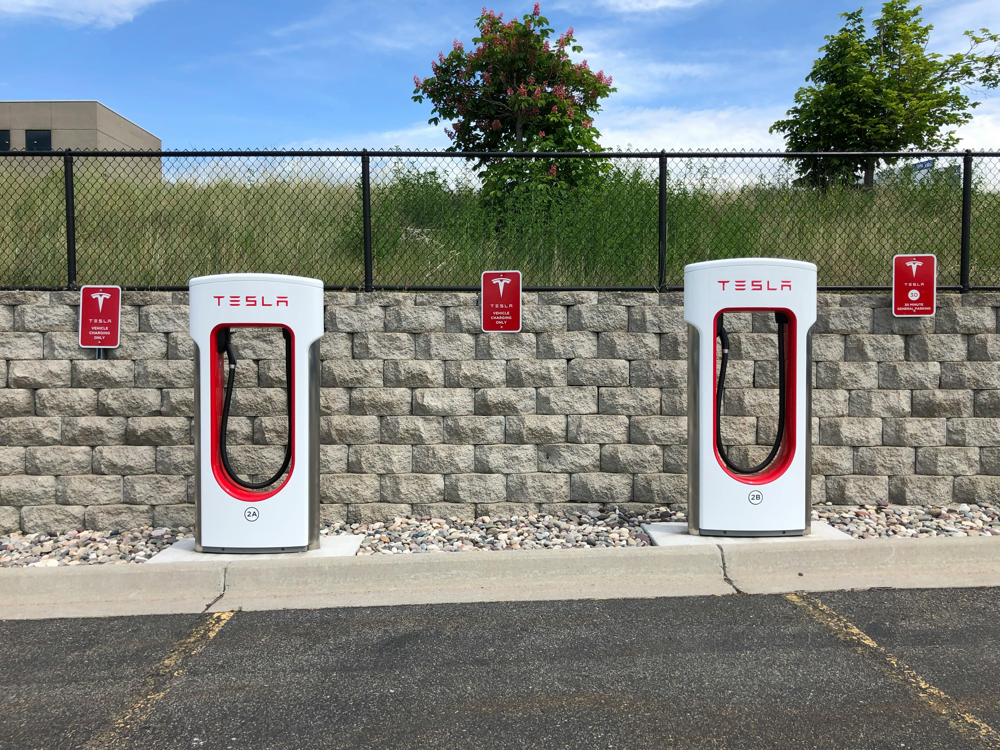

Electric Vehicle Charging Stations Have Grown Wildly, But Still Nowhere Near Gas Stations.
Written by: James Kelly, April 29th
Written by: James Kelly, April 29th
Photo of all electric vehicle charging points in the United States and Canada (Source: U.S. Department of Energy).
Since 2014, public Electric Vehicle charging stations have grown by 812% in the U.S., however they are still not as accessible as gas stations. There are over 140,000 gas stations in America and under 60,000 electric vehicle (EV) charging stations. Many states in the U.S. do not have enough EV charging stations for long road trips, especially many of the western one. Yellowstone National Park, which is situated mainly in Wyoming, has under 15 EV charging stations in it's 3,471 square miles. The average range for an electric vehicle is "110-300 miles," according to the U.S. Department of Energy. This problem does not end in the United States, as even in Canada many isolated cities are too far for EV owner's to leave with their cars.
Canada, who wants to go all electric by 2035, has problems with their EV charging station's. Yellowknife is the capital of the Northwest Territories in Canada. Having a population of 20,000 people, it is the only city in the territory. The closest charger to the four in Yellowknife, and only four in entire territory, is in High Level, Alberta, which is over 400 miles away, and over the average range for an electric vehicle.
While this scenario is not commonly seen in most areas of the countries, there is still extra planning that anyone wanting to take a road trip has to do, which can cause something called "range anxiety." This is the fear of being stranded due to an electric vehicle running out of battery, per the National Grid Group. With electric vehicles being better for the environment, this a problem that will need to be solved for areas where EV charging stations are harder to find.
One Tesla Model Y owner said that “We can count on about 250 miles on highway driving,” also adding the need to plan out many of their longer trips, which would add time by finding available chargers.
Photo by: Chad Russell, 2019
California has the most amount of EV charging stations out of any state, province, or territory in the U.S. or Canada, while Nunavut, a territory in Canada, has none. However some states in the U.S. have done even better than California at making sure they have enough charging stations for their land size, with many of the east coast states in America having the best charging stationt to land area ratios. Washington, D.C. (not pictured on the left graph) has the best ratio out of any area, being the only one to have more EV charging stations than their land area (square miles). On the other side, many of the west coast areas in both countries do not have enough EV charging stations to cover all of their land size, especially in Canada, who's territories make up three of the worst four ratios.
The states with the highest carbon emissions per capita fall in line with the right graph, with 3 U.S. states, Alaska, Wyoming and North Dakota falling in the worst 5 states of both lists.
However, there are many plans in both Canada and the U.S. to create more electric vehicle charging stations. In January of this year, President Joe Biden announced that the country was on track for over 500,000 charging stations by 2026, and that the amount had grown by 70% since the president took office.
In Canada, along with their plan to be all electric by 20235, announced they were investing $680 million Canadian dollars into zero-emission vehicles, partly to be used in creating over 33,500 more charging stations by 2029 in the country.
Tesla's Roadster, while still having an unknown production date, plans to have over 600+ miles in range. Their cars also feature software which lets you plan out a trip beforehand, finding the best route according to your car's capabilities.
The U.S. Department of Energy also created a map, linked below, that helps you create a route as well, showing you all of the available charging stations among a set path.